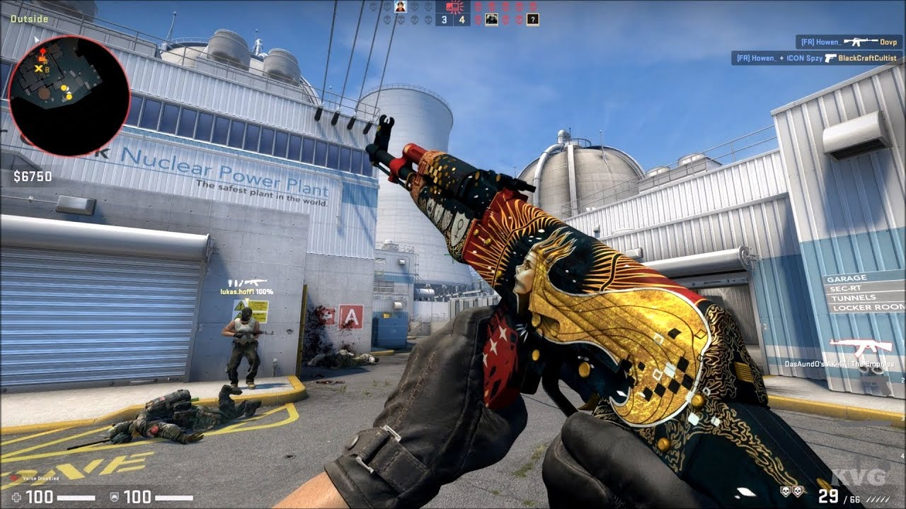

Principais generos de jogos
FPS
A sigla FPS significa “First Person Shooter”, que pode ser traduzido como “Atirador em Primeira Pessoa” ou simplesmente, jogo de tiro.

Estes jogos tem como principal característica a câmera posicionada como os olhos do personagem, dando a sensação de que é o jogador que está vivenciando a experiência (daí o termo “1ªpessoa”, pois o jogador se refere ao personagem que controla como “eu”). A principal mecânica de jogo de um FPS é atirar. Estes jogos são uma evolução de games que utilizavam pistolas como Duck Hunt (NES) e dos jogos de tiro sobre trilhos como House of the Dead (PS1) ou Mad Dog McCree (3DO).
Battle Royale
Um subgênero dos jogos de tiro, o Battle Royale consiste em um gênero de jogo eletrônico em que uma grande quantidade de jogadores (50, 100 e até 200) entram em um mapa bem amplo e devem coletar armas e lutar uns com os outros enquanto a arena vai diminuindo de tamanho. Vence quem restar de pé no final.

O termo Battle Royale vem de um romance japonês do escritor Koushun Takami, adaptado para o cinema no ano 2000, em que um grupo de jovens estudantes é obrigado a lutar entre si em uma área isolada, recebendo armas ou itens aleatórios como equipamento. A obra também inspirou a popular franquia norte-americana Jogos Vorazes. Os jogos do gênero Battle Royale surgiram primeiro como ‘mods’, adaptações feitas pela comunidade, de jogos de tiro para PC. O primeiro deles foi PlayerUnknown’s Battlegrounds, um mod do jogo ArmA 2, que acabou se tornando um jogo independente de muito sucesso, com versões para computador, consoles e celular.
FPA
Outro derivado importante dos jogos de tiro em primeira pessoa, o gênero FPA significa First Person Adventure, e consistem em jogos eletrônicos com a perspectiva em primeira pessoa, mas nos quais a mecânica principal não é abater todos os inimigos e sim a exploração do cenário e resolução de quebra-cabeças – elementos que fazem parte de um gênero bastante abrangente e tradicional, Ação e Aventura (The Legend of Zelda, Tomb Raider, Uncharted, Assassin’s Creed, Prince of Persia, God of War, etc), mas que ganham aqui um grau maior de imersão, por colocar o jogador “dentro da pele” do aventureiro.
A série Metroid Prime, da Nintendo, é um ótimo exemplo de jogos eletrônicos FPA. Nestes jogos, o jogador assume o papel da protagonista Samus Aram e explora mundos alienígenas. Em Resident Evil Village, o jogador explora um vilarejo assombrado por monstros e precisa descobrir pistas e resolver puzzles para salvar sua família. Muitos jogos de Sobrevivência bastante populares também se enquadram como FPA, embora tenham elementos próprios que permitam a classificação como um subgênero: em jogos como Minecraft, Rust, Ark: Survival Evolved e Stranded Deep, os jogadores devem coletar recursos como água e comida, fabricar abrigos e equipamentos para sobreviver ao clima e perigos de um ambiente hostil.
PVP
Enquanto os jogos FPA em geral colocam os jogadores em conflito com o ambiente (PVE – Player Versus Environment, ou Jogador versus Ambiente), outros jogos envolvem a disputa direta entre os jogadores. São os chamados PVP (Player Versus Player, ou Jogador versus Jogador).
Uma modalidade presente em quase todo tipo de jogo (em FIFA, o jogador pode disputar partidas de futebol com outro, enquanto em Gran Turismo, corridas online colocam vários jogadores na mesma pista), o PVP pode ser visto também como um gênero, pois há jogos eletrônicos que têm como mecânica central o engajamento dos jogadores em conflitos uns contra os outros.
RTS
Uma modalidade presente em quase todo tipo de jogo (em FIFA, o jogador pode disputar partidas de futebol com outro, enquanto em Gran Turismo, corridas online colocam vários jogadores na mesma pista), o PVP pode ser visto também como um gênero, pois há jogos eletrônicos que têm como mecânica central o engajamento dos jogadores em conflitos uns contra os outros.
O gênero RTS tem entre seus nomes mais conhecidos games como Age of Empires, em que os jogadores controlam nações que devem evoluir da Idade da Pedra até a era medieval ou além, disputando recursos e terras com outros povos; Command & Conquer, em que exércitos futuristas disputam recursos energéticos e lutam pela supremacia; e os clássicos da Blizzard Entertainent, Warcraft e StarCraft.